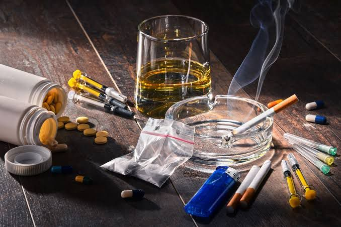

¿Qué son las drogas?
Las drogas son sustancias que cambian la forma en que funciona el cuerpo o la mente. Pueden ser legales como el alcohol o ilegales como la cocaína. Incluso las legales pueden ser dañinas si se usan sin control.
Efectos negativos
- Problemas en el corazón y pulmones
- Tristeza o ansiedad
- Dificultad para concentrarse
- Dependencia (adicción)
Tipos de drogas
- Estimulantes: Te hacen sentir energía (como la cafeína o cocaína)
- Depresoras: Te hacen sentir más lento (como el alcohol)
- Alucinógenas: Te hacen ver o sentir cosas que no existen (como el LSD)
- Opioides: Usados como medicamentos para el dolor (como la morfina)

Estadísticas en México
| Droga | Porcentaje |
|---|---|
| Alcohol | 71.2% |
| Tabaco | 23.4% |
| Marihuana | 12.4% |
| Cocaína | 2.5% |
| Anfetaminas | 1.4% |
Fuente: SISVEA y OMTAD

¿Cómo prevenir el consumo?
- Infórmate: Conoce los riesgos de cada droga.
- Habla con tu familia: La comunicación ayuda mucho.
- Elige amistades sanas: Rodéate de personas positivas.
- Ocúpate en cosas que te gusten: Deportes, música, arte, etc.
¿Dónde pedir ayuda?
Si tú o alguien cercano necesita apoyo, hay instituciones que pueden ayudarte de manera gratuita y confidencial:
- Consejo Nacional contra las Adicciones (CONADIC): 800 911 2000
- Linea de la Vida: 800 911 2000 (24/7)
- Centro de Integración Juvenil (CIJ): www.cij.gob.mx
- Instituto Nacional de Psiquiatría: www.inprf.gob.mx
No estás solo/a. Pedir ayuda es valiente y puede salvar vidas.
Actividades para distraerte y mantenerte positivo
- Haz deporte: caminar, correr, bailar o practicar artes marciales.
- Practica hobbies: dibujo, música, escritura, jardinería o cocinar.
- Únete a grupos: comunidades, voluntariados, clubes o grupos religiosos.
- Aprende algo nuevo: un idioma, instrumento musical o habilidad manual.
- Conecta con la naturaleza: parques, senderismo, meditación al aire libre.
¿Por qué es importante acudir a terapia?
La terapia psicológica puede ayudarte a entender tus emociones, superar situaciones difíciles y desarrollar habilidades para enfrentar la vida sin recurrir a sustancias.
Un psicólogo o terapeuta puede guiarte de forma profesional y respetuosa. No necesitas esperar a "sentirte peor" para pedir ayuda.
Reflexiona: Cuestionario personal
Este cuestionario no da un diagnóstico, pero puede ayudarte a reflexionar: